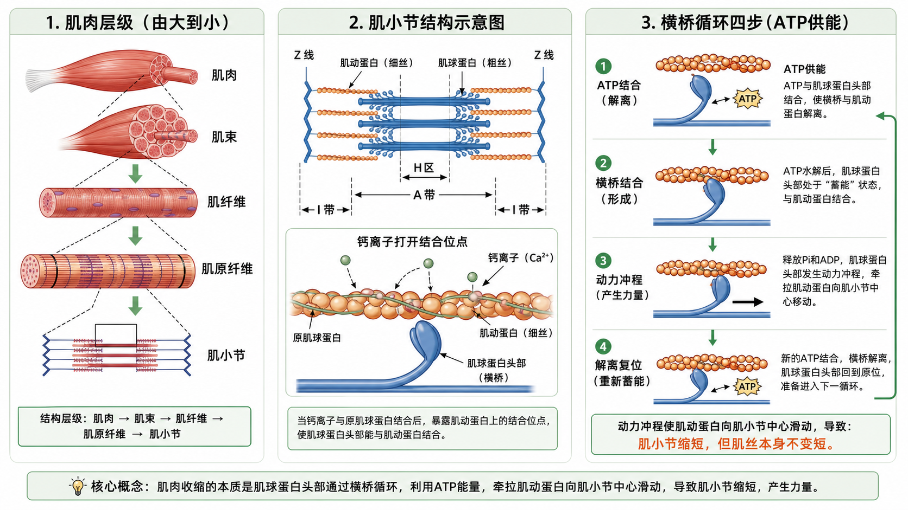

肌肉收缩像许多小划手一起拉绳：肌球蛋白头部反复抓住肌动蛋白、用 ATP 做动力冲程，把细丝往肌小节中心拉；结果是肌小节变短，但肌丝本身没有缩水。

骨骼肌像一捆层层打包的电缆。最外面是肌外膜，里面分成一束束肌束；每个肌束由很多肌纤维组成，肌纤维本质上就是很长的肌细胞；肌纤维里面排满肌原纤维，肌原纤维再由一个个肌小节串联。
这套层级很重要，因为“动作表现”与“微观适应”不在同一尺度。你在训练里看到的是杠铃移动、关节角度变化、肌肉变硬；身体真正执行的是运动神经让一批肌纤维兴奋，肌纤维内部无数肌小节一起产生张力。
| 层级 | 像什么 | 学习重点 |
|---|---|---|
| 整块肌肉 | 一整根电缆 | 看得到、摸得到，连接骨骼产生关节运动 |
| 肌束 | 电缆里的一束线 | 由结缔组织包裹，帮助传力和分隔结构 |
| 肌纤维 | 一根很长的肌细胞 | 接受神经信号，内部有许多肌原纤维 |
| 肌原纤维 | 一串重复机器 | 由肌小节首尾相连，真正承担收缩结构 |
| 肌小节 | 一个微型拉力单元 | Z 线到 Z 线，粗细肌丝滑动导致缩短 |
你摸到肱二头肌鼓起来，是整块肌肉形状变化；显微镜下真正反复缩短的是无数肌小节。粗看像一块，细看是成千上万小单位同时工作。
如果把一次二头弯举放慢看：大脑先决定发力，运动神经把信号送到肱二头肌，肌纤维兴奋，钙离子释放，横桥循环开始。最后你看到的“手臂弯起来”，只是这条链条的最后画面。
训练含义力量训练造成机械张力和微损伤时，影响从蛋白质层面传到肌纤维，再通过恢复和合成表现为肌肉增大。训练日志里的重量和次数，最终都落到这些微观结构上。
所以增肌不是“泵感越强越好”这么简单。泵感是局部充血和代谢压力的一部分，机械张力、动作幅度、重复质量、恢复营养也会决定肌纤维是否得到足够适应信号。
常见误解❌以为肌肉收缩就是整块肌肉自己“鼓起来”。✅其实先有肌小节缩短，很多小单位同步变化，外面才看到肌肉变硬变粗。
肌小节可以理解为一段可缩短的“微型拉链”。两端 Z 线往中间靠近，整段就变短。肌动蛋白是细丝，接在 Z 线附近；肌球蛋白是粗丝，位在中间，带着能抓住细丝的头部。
肌小节里常见几个带区：A 带对应粗丝长度，收缩时大体不变；I 带主要是只有细丝的区域，收缩时会变窄；H 区主要是只有粗丝的中间区域，在这个区域内，粗肌丝和细肌丝没有重叠，只有粗肌丝，当肌肉收缩，细肌丝（肌动蛋白丝）向M线（肌小节中央）滑行时，细肌丝会更深地插入到A带内部，如果收缩到极致，H区甚至可能消失。这个变化是考试常考点，也是判断你是否真的理解“滑行”的关键。
真实例子做腿屈伸时，股四头肌里无数肌小节同时缩短，让膝关节伸直。动作越需要力量，神经系统会募集更多运动单位，让更多肌纤维里的肌小节参与。
同样是腿屈伸，底部刚启动、接近伸直、顶峰停顿时，股四头肌长度和关节力矩都不同。你主观感觉某一段更难，不只来自意志力，也来自肌小节重叠、力臂、器械阻力曲线共同作用。
训练含义理解肌小节能帮助你理解长度-张力关系：肌肉太短或太长时，粗细肌丝重叠不理想，横桥数量少，力量会下降。动作半程很强、底部很弱，常和这个有关。
编动作时不要只问“这个动作练不练到某块肌肉”，还要问“在哪个长度练到”。比如腿弯举能让腘绳肌在膝屈曲中发力，罗马尼亚硬拉让腘绳肌在髋屈曲、被拉长状态下承受张力，两者刺激感不同。
常见误解❌以为肌肉越拉长越有力。✅肌肉存在最佳长度，太短挤在一起、太长够不着，都不利于横桥产生力量。
肌动蛋白像两条带小珠子的绳，肌球蛋白像中间伸出许多小手的粗绳。真正产生力量的是肌球蛋白头部：它抓住肌动蛋白，弯一下，拉一下，再松开复位。
不要把“粗丝更粗”理解成粗丝单独变短。粗丝承担发动机角色，细丝承担被拉动的轨道角色；力量来自两者之间的连接和相对滑动，不来自某一根丝自己缩进去。
真实例子卧推推起杠铃时，胸大肌、三角肌前束、肱三头肌里的肌球蛋白头部都在大量循环。宏观看是杠铃上升，微观看是横桥一轮轮拉动细丝。
卧推卡在胸口附近时，可能不是胸大肌“没有参与”，而是该角度下肌肉长度、肩肘力臂、稳定能力共同让横桥输出难以转化成足够杠铃速度。微观有力，不等于宏观一定能过粘滞点。
训练含义ATP 不是只给跑步供能，力量训练每一次肌肉收缩也要 ATP。大重量组间休息不足时，你感觉“没电”，本质上和能量再合成跟不上有关。
这也解释了为什么同样 10 次，前几次顺、后几次慢。不是后几次突然“不会发力”，而是可用能量、神经驱动、代谢环境和横桥循环效率都在下降，身体只能用更慢速度完成同样动作。
常见误解❌以为乳酸才是所有疲劳原因。✅短时大重量更常受 ATP-PCr、神经输出、局部离子环境等多因素限制，乳酸不是唯一解释。
字面意思ATP = 三磷酸腺苷，肌肉收缩直接能源；PCr = 磷酸肌酸，ATP 的备用仓库。
大白话肌肉现成 ATP 只够全力输出 1-2 秒。PCr 像充电宝，把 ADP 快速“充回”ATP。
卡在哪里PCr 储量很少，全力输出约 6-8 秒，大概 3-5 次很重重复。PCr 快耗尽后，ATP 再生速度掉下去，横桥循环缺燃料，动作速度就掉。
字面意思大脑和脊髓向肌肉发出“收缩”指令的强度和频率，也叫神经驱动。
大白话大重量需要高频电信号，才能募集更多、更大的运动单位，尤其是力量强但容易疲劳的快肌纤维。
卡在哪里连续高强度发力时，中枢神经系统会疲劳，兴奋性和保护性抑制会改变。感觉就是“想发力，但身体不听使唤”。
字面意思肌肉细胞内外 K⁺、Ca²⁺、H⁺ 等离子浓度变化。
大白话肌肉每兴奋一次，离子都会跨膜移动。重复高强度收缩后，电解质平衡会乱。
卡在哪里K⁺ 堆积会影响膜电位，让兴奋信号更难传进去；Ca²⁺ 释放或回收不顺，会让结合位点打开变慢，横桥结合效率下降。
横桥循环可以拆成四步：ATP 结合让肌球蛋白和肌动蛋白解离；ATP 水解让肌球蛋白头部“上弦”；头部结合肌动蛋白；释放磷酸和 ADP 后发生动力冲程，把细丝往肌小节中心拉。新 ATP 再结合，循环继续。
这个循环不是一次性动作，而是只要钙离子还在、ATP 还够、神经信号还在，许多肌球蛋白头部就会错峰工作。部分头部在抓，部分头部在拉，部分头部在复位。这样肌肉才能保持连续张力，而不是一抽一抽完全断开。
| 步骤 | 发生了什么 | 好记法 |
|---|---|---|
| ATP 结合 | 横桥松开肌动蛋白 | 给钱松手 |
| ATP 水解 | 肌球蛋白头部复位蓄力 | 拉弓上弦 |
| 横桥结合 | 头部抓住肌动蛋白 | 抓住绳子 |
| 动力冲程 | 头部弯曲拉动细丝 | 划桨拉水 |
做引体向上时，背阔肌和肱二头肌在向心阶段把身体拉上去，横桥循环负责产生拉力；下降阶段是离心控制，肌肉被拉长但仍在产生张力，横桥仍在工作，只是外界阻力让肌肉长度增加。
这也是离心训练容易带来强烈酸痛的原因之一：不是离心阶段“肌肉没用力”，而是肌肉在高张力下被拉长，微观结构承受更大机械挑战。Day 19 会用力-速度曲线进一步解释离心为什么能产更大力。
训练含义只要肌肉持续产生张力，横桥就持续循环。等长收缩时关节不动，但微观层面仍有横桥工作，只是产生的力和外界阻力平衡。
控制节奏能改变横桥工作时间。比如卧推下放 3 秒，比自由落下更能让胸大肌和肱三头肌在离心阶段维持张力；但节奏太慢也会限制使用重量，所以训练目标不同，节奏安排不同。
常见误解❌以为 ATP 是让肌肉“收缩”的开关。✅ATP 同时负责供能和让横桥解离，没有 ATP 横桥反而松不开。
滑行理论的核心不是“肌丝被压短”，而是“相互重叠增加”。Z 线彼此靠近，I 带和 H 区变窄，A 带大体不变，因为 A 带对应粗丝长度。
可以把粗丝和细丝想成两把相对插入的梳子。梳齿越互相插入，两个梳背距离越近；梳齿本身没有缩短。肌小节缩短也是这个逻辑：Z 线距离变近，但肌动蛋白和肌球蛋白仍保持自身长度。
| 结构 | 收缩时变化 | 为什么 |
|---|---|---|
| Z 线间距 | 变短 | 细丝被拉向肌小节中心 |
| I 带 | 变窄 | 只有细丝的区域减少 |
| H 区 | 变窄甚至消失 | 只有粗丝的中间区域减少 |
| A 带 | 大体不变 | 对应粗丝长度，粗丝本身不缩短 |
弯举上举时，肱二头肌缩短，手臂弯起来。微观上不是肌动蛋白和肌球蛋白变短，而是它们滑得更重叠，像两个梳子齿互相插得更深。
做坐姿划船时，背阔肌、菱形肌、斜方肌中下束等一起产生张力。你看到肩胛后缩、肘向后走，里面仍是同一套滑行机制，只是不同肌肉、不同角度、不同纤维方向共同完成动作。
训练含义这解释了为什么动作幅度会影响刺激。全程动作让肌肉在不同长度下承受张力，横桥重叠范围也不同；但幅度必须在可控、无痛、姿势稳定前提下扩大。
比如哑铃飞鸟底部胸大肌被拉长，顶峰水平内收更明显；夹胸器在不同器械设计下阻力曲线不同。理解滑行理论后，你会知道“拉伸感”和“收缩感”都只是肌小节在不同长度下工作的主观表现，不能单独代表训练有效性。
常见误解❌以为肌肉“收缩”就是每根肌丝缩短。✅真正缩短的是肌小节距离，肌丝本身不变短。
放松时，原肌球蛋白挡住肌动蛋白结合位点，肌球蛋白头部抓不上去。神经信号到来后，肌浆网释放钙离子，钙结合肌钙蛋白，原肌球蛋白移位，结合位点暴露，横桥循环才真正开始。
这套“开门”机制能防止肌肉无缘无故乱收缩。没有神经信号时，结合位点被挡住；有信号时，钙离子升高，门打开；信号结束后，钙离子被回收到肌浆网，门关上，肌肉放松。
真实例子你想做一次弯举，大脑发出信号，运动神经让肌纤维兴奋，钙离子释放，横桥能结合，肱二头肌才产生张力。Day 26 会完整讲“神经信号到钙释放”的链条。
抽筋常被简单说成“缺钙”，但训练中的抽筋更复杂，可能和疲劳、神经兴奋性、水电解质、局部代谢环境有关。今天重点只记住：正常收缩必须依赖钙离子调节结合位点。
训练含义热身能改善神经肌肉兴奋、温度和组织状态，让收缩更顺畅。不是“玄学激活”，而是让信号、能量和组织弹性更适合发力。
动作前的轻重量热身组有实际价值：它让神经系统熟悉动作路径，让目标肌肉逐步进入工作状态，也让关节和结缔组织准备承受更高张力。热身不是把人练累，而是把收缩链条调到可用状态。
常见误解❌以为有 ATP 就一定能收缩。✅还需要钙离子暴露结合位点，否则横桥没地方抓。
ATP 水解释放能量，让肌球蛋白头部复位准备拉动；新的 ATP 结合又让头部从肌动蛋白上解离。也就是说，ATP 不是只负责“用力”，还负责“松手”。
如果用生活类比：ATP 像一次划桨的燃料券。先让桨手松开旧位置，再把桨手重新摆到能发力的位置，然后桨手抓住水往后划。没有燃料券，桨手没法顺利进入下一轮。
真实例子死亡后尸僵就是经典反例：没有 ATP，肌球蛋白头部无法从肌动蛋白上解离，肌肉变僵硬。训练中不会这么极端，但能量不足会让输出下降、动作变慢。
大重量深蹲第一组 5 次很快，第三组同重量突然很慢，通常不是肌肉结构在几分钟内变差，而是可用能量、神经兴奋、心理准备和局部疲劳共同改变了横桥循环与动作输出。
训练含义高强度力量和爆发训练依赖快速 ATP 再合成。组间休息太短，下一组可用能量不足，横桥循环速度和神经输出都受影响。
NSCA 与 NASM 都会强调训练目标匹配休息：最大力量和爆发训练休息更长，肌肥大训练中等休息，耐力或代谢压力训练休息更短。背后逻辑之一就是不同目标对 ATP 再合成和疲劳管理要求不同。
常见误解❌以为休息只是让“喘气恢复”。✅力量训练组间休息也在恢复 ATP-PCr 和神经输出：PCr 重新补库存，神经系统重新找回油门，局部离子环境也逐步回到更适合兴奋和收缩的状态。
单个横桥力量很小，单个肌小节也很小。真正能举起杠铃，是许多横桥、许多肌小节、许多肌纤维、许多运动单位在时间上同步发力。
真实例子新手训练早期力量增长很快，肌肉还没明显变大，常因为神经系统更会募集和协调这些单位。微观结构没换，但调用效率提升。
训练含义技术练习、渐进超负荷、足够恢复都重要。技术让力量方向更有效，超负荷给组织适应信号，恢复让蛋白质合成和能量系统补回来。
常见误解❌以为练得酸才代表肌丝滑行有效。✅酸痛不是收缩质量指标，稳定张力、动作控制、渐进负荷更重要。
❌很多人以为肌肉收缩时肌丝自己变短。✅其实是肌动蛋白和肌球蛋白相互滑动，肌小节变短。
❌很多人以为 ATP 只负责让肌肉用力。✅ATP 也负责让横桥解离，没有 ATP 会松不开。
❌很多人以为等长收缩时肌肉内部没变化。✅关节不动不等于横桥不工作，内部仍在产生张力。
1. 肌肉收缩的最基本功能单位是?
2. 肌丝滑行理论最准确的说法是?
3. 多选: 横桥循环需要哪些条件或步骤?
4. 案例: 学员问“我做平板支撑身体没动，肌肉是不是没有收缩?” 你怎么回答?
5. 应用题: 学员做哑铃弯举时说“顶峰夹紧才是真的收缩，底部拉长阶段肌肉没怎么工作”。你如何纠正?